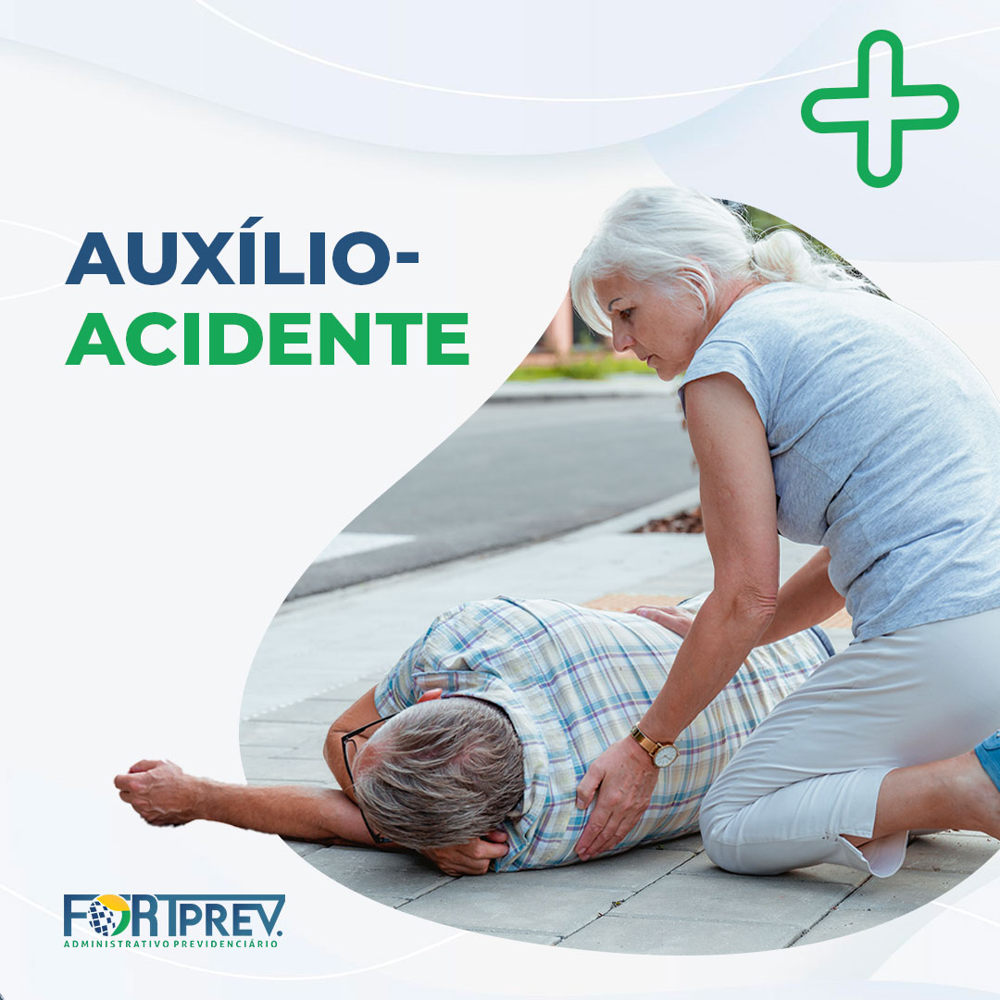

Auxílio acidente
 O auxílio acidente é pago ao segurado que sofrer acidente de qualquer natureza e que a consolidação das lesões resultarem sequelas que impliquem REDUÇÃO da capacidade para a atividade laborativa habitual.QUEM PODE RECEBER O AUXÍLIO-ACIDENTE?
O empregado urbano, rural e doméstico, o Trabalhador avulso e os Segurados especiais.
*Lembrando que não tem a possibilidade de receber os contribuintes individuais e os facultativos. *
Requisitos
- Qualidade de segurado
- Ter sofrido acidente de qualquer natureza
- A redução parcial e definitiva para o trabalho habitual
- Comprovar o nexo causal entre o acidente e a redução da capacidade
O benefício deve ser concedido a partir do dia seguinte ao da cessação do auxílio-doença, ou na data do requerimento quando não houver o recebimento de auxílio-doença. . Caso não seja realizada automaticamente a conversão pelo INSS, a própria cessação do auxílio-doença sem o deferimento do auxílio-acidente, já corresponde a uma negativa do INSS a respeito do direito do segurado ao benefício, o que caracteriza o interesse de agir da parte. . VALOR DO BENEFÍCIO: Antes da Reforma 13/11/2019: a renda mensal inicial do auxílio-acidente corresponde a 50% do salário-de-benefício. Depois da Reforma: o Auxílio Acidente será 50% da renda que você teria direito caso fosse aposentado por invalidez. . É bom lembrar que como se trata de uma indenização, não impede o cidadão de continuar trabalhando. E deve continuar para manter seu direito a aposentaria e outros benefícios previdenciários que necessitam da carência.